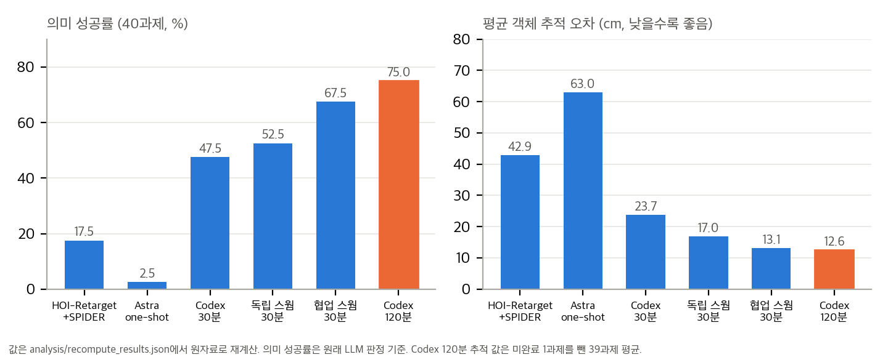
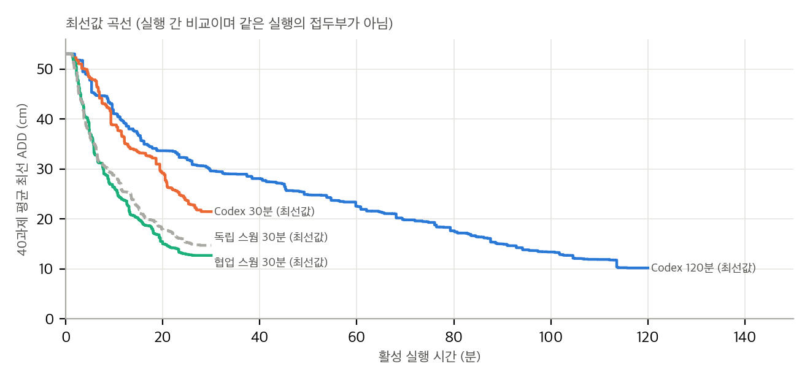
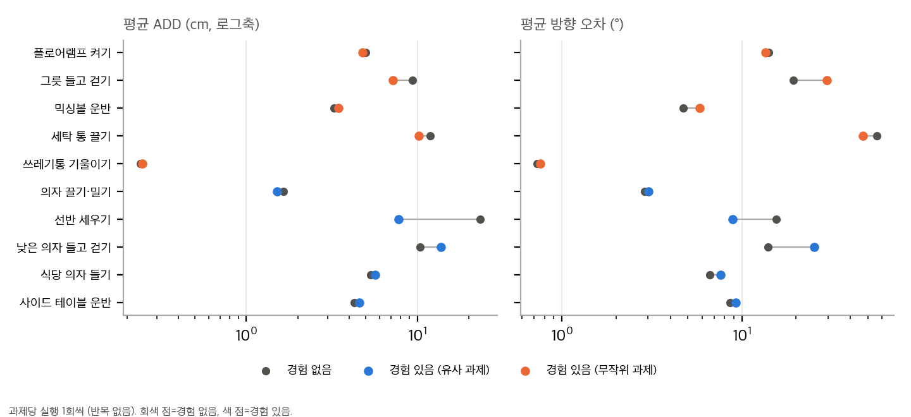
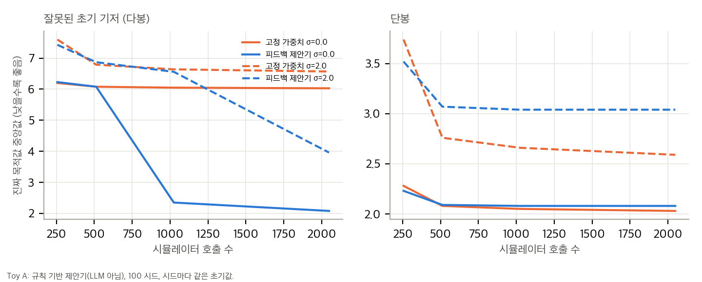
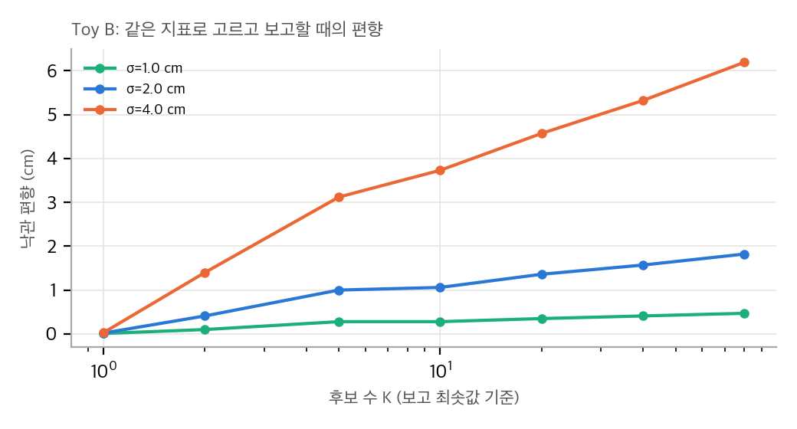

그림 1. 40과제 의미 성공률과 평균 추적 오차 (블로그 원자료 재계산, 우리 그림).

대상: Retargeting Through Reasoning for Humanoid–Object Interaction (프로젝트 블로그, 2026-11-06 게시, 접근 2026-11-10). 저자 Narayanan Palghat Parameswaran, Jay Karhade, Haoyang He, Neehar Peri, Jay Patrikar, Dong-Ki Kim, Shayegan Omidshafiei, Sebastian Scherer, Deva Ramanan. arXiv 판과 심사 논문이 없다. 본문 인용은 블로그의 절 번호(§1–§7, A1–A2)와 표 번호를 쓴다. 원문 텍스트는 paper/blog.txt, 원본 HTML은 paper/blog.html에 있다.
§1의 "주장 A"는 설명이고, 정량 근거는 §4 표다. 블로그는 "semantic intent" 보존을 목표라고 하지만 이를 재는 지표는 LLM 판정 하나뿐이다(§3.2).
| 구성 요소 | 블로그가 적은 내용 |
|---|---|
| 입력 | SMPL 형식 사람 시연, HOI-Retarget이 만든 초기 운동학 기준, 장면, 객체 목표 궤적(로봇 크기에 맞게 scale) |
| 출력 | 전신과 손의 기준 모션 + Python 제어 코드 (에이전트가 작성) |
| 제어기 | SONIC(다리·허리), Dex3 손은 임피던스 제어. 에이전트가 SONIC의 관절 출력을 보강하거나 대체할 수 있음 |
| 시뮬레이터 | MuJoCo, G1 + Dex3 모델 |
| 피드백 | 실행 이미지, 객체 추적 오차(object_path_v1), 접촉 측정. 매 시도 후 확인 |
| 시도 수 | 한 실행 최대 2시간. 저장된 실행 시도 수는 실행당 평균 약 118개(최소 4, 최대 762, 원자료 기준) |
| 구성 | 단일 Codex 실행, 독립 4-agent 스웜, 협업 4-agent 스웜, Astra one-shot(도구 호출 없음) |
agent가 실제로 바꾸는 것은 블로그 A2 트레이스(clothes-stand 한 실행, repo/site/trace-explorer/architecture/agent-0.json)에서 확인했다. 26회 시도 중 메시지 12개를 보면 다음이 보인다.
즉 에이전트는 기준 궤적과 제어 코드를 같이 고치고, 손가락·손바닥 접촉 목표와 놓는 타이밍을 바꾼다. 신경망 가중치나 SPIDER식 비용 가중치를 바꾸는 방식은 아니다. 블로그는 에이전트가 목적함수 가중치를 바꾸는지는 설명하지 않는다. 트레이스의 도구 호출 내용이 "Workspace operation"으로 가려져 있어서 코드 수준의 편집 내용은 확인할 수 없다.
object_path_v1이지만 정의 코드와 상세 명세는 공개 저장소에 없다(04 참조).semantic) 외에 저자가 따로 검토한 판정(reviewed_semantic)을 두었다. 시작 자세에서 물체를 관통한 경우를 걸러낸 것이다. 보고 수치는 원래 판정을 쓴다고 명시한다(protocol).| 항목 | 블로그 값 | 재계산(원자료) | 비고 |
|---|---|---|---|
| Table 1 HUMOTO 평균 ADD (HOI+SPIDER / one-shot / Astra w/ Ref.) | 44.96 / 56.09 / 9.85 | 동일 | 20과제 |
| Table 2 OMOMO 평균 ADD | 40.77 / 69.87 / 15.55 | 동일 | Astra w/ Ref.는 19과제만 추적 |
| 의미 성공률 (40과제) | 17.5 / 2.5 / 75.0 | 동일 | 75% = 30/40 |
| 스웜 30분 의미 성공 | 독립 52.5(21/40), 협업 67.5 | 동일 | 재검토 후에는 독립 47.5(19/40) |
| 합산 추적 평균 | 42.87 / 62.98 / 12.63 | 동일 | 12.63은 39과제 평균 |
| 30분 · 120분 최선값 | 29.59 · 10.21 | 동일 | budget-tracking.json |
| 경험: 선반 | 23.35 → 7.77 | 동일 | experience-story.json (실행 1회씩) |
재계산 결과와 통계 검정은 analysis/03_analysis.md에 있다. 핵심만 적으면 다음과 같다.
sub13_whitechair_069)를 뺐다는 점을 표 주석에만 적었다.site/content/refinement-results.md)에는 옛 수치 5%와 52.48 cm가 아직 남아 있다.analysis/03_analysis.md §7에 정리했다.블로그 §1이 나누는 세 축은 (a) 사람 자세 보존(GMR류), (b) 물리 샘플링(SPIDER류), (c) 의미 보존 + 에이전트 루프(이 블로그)다. (c)는 기존 방법을 대체한다기보다 (a)를 입력으로 받아 (b)가 실패하는 접촉 전략을 고치는 구조다.
| 구성 요소 | 출처 | 라이선스 (확인 방법) |
|---|---|---|
| 초기 운동학 기준 | HOI-Retarget, arXiv:2609.34674 | CC BY 4.0 (arXiv abs 페이지). 공식 코드 leggedrobotics/hoi-retarget |
| 물리 기준선 | SPIDER, arXiv:2511.09484 | 논문 CC BY 4.0. 코드 README 배지 CC BY-NC 4.0 (GitHub API는 NOASSERTION) |
| 전신 제어기 | SONIC, arXiv:2511.07820 | CC BY-SA 4.0 (arXiv abs). 코드는 NVlabs/GR00T-WholeBodyControl (API NOASSERTION) |
| 에이전트 프레임워크 | OpenAI Codex | Apache-2.0 (openai/codex, GitHub API) |
| 에이전트 모델 | GPT-6 Astra (OpenAI 발표 글) | 비공개 모델. 라이선스 해당 없음 |
| 시뮬레이터 | MuJoCo (Todorov et al., IROS 2012) | 공식 사이트 (라이선스 확인 생략) |
| G1 모델 | unitreerobotics/unitree_mujoco | BSD-3-Clause (GitHub API) |
| 사람 동작 데이터 | HUMOTO, OMOMO | 블로그가 인용. 원자료 공지(repo/site/architecture-trace/DATA-NOTICE.txt)는 상위 모션 데이터를 CC BY-NC-SA 4.0으로 표기한다 |
| 블로그 원자료 | narayananpp/semantic-humanoid-retargeting-blog | 라이선스 파일 없음 (GitHub API 404). 3절과 README 참조 |
| 저장소 | 역할 | 라이선스 | 최근 push | 이 폴더에서 한 일 |
|---|---|---|---|---|
| narayananpp/semantic-humanoid-retargeting-blog | 블로그 소스 + 과제별 원자료·트레이스·export 도구 | 없음 (LICENSE 없음) | 2026-11-06 (커밋 84cbe2253) |
repo/에 shallow clone, 정적 읽기와 수치 재계산 (04 참조) |
| facebookresearch/spider | SPIDER 공식 구현 (기준선의 원 방법) | README: CC BY-NC 4.0 | 2026-09-22 | 정적 읽기만. GitHub 표시 NOASSERTION |
| leggedrobotics/hoi-retarget | HOI-Retarget 공식 구현과 데이터 | NOASSERTION (논문 CC BY 4.0) | 2026-09-30 | 정적 확인만. 클론하지 않음 |
| NVlabs/GR00T-WholeBodyControl | SONIC 제어기 코드 (블로그 SONIC 링크는 프로젝트 페이지 nvlabs.github.io/GEAR-SONIC) | NOASSERTION | 2026-11-03 | 정적 확인만 |
| YanjieZe/GMR | GMR 운동학 재targeting | MIT | 2026-10-22 | 블로그 kinematic 비교 대상. 정적 확인만 |
| openai/codex | 블로그가 쓴 에이전트 환경 | Apache-2.0 | 2026-11-10 | 정적 확인만. 블로그 모델(GPT-6 Astra)과 무관한 소프트웨어 |
| unitreerobotics/unitree_mujoco | G1 MuJoCo 모델 | BSD-3-Clause | 2026-09-07 | 정적 확인만 |
| Hu-xiao-max/dexgpt | 블로그가 관련 공개 작업으로 인용 | 없음 | 2026-09-11 | 정적 확인만 (손 재targeting, 이 블로그와 직접 관계 없음) |
gh search repos "GEAR-SONIC"에서는 해당 저장소가 나오지 않았다. 블로그 링크는 프로젝트 페이지이며 코드 저장소는 GR00T-WholeBodyControl이다.
site/assets/analysis/*.json: 과제별 추적 오차, LLM 판정, 토큰 사용량, 최선값 곡선, 매칭 시간 곡선, SPIDER 재실행 결과.site/experience-story.json: 경험 실험 10과제의 without/with 곡선과 과제별 지표.site/trace-explorer/: 에이전트 트레이스(도구 호출 내용은 가려짐, 메시지와 시도 기록은 공개).tools/*.py, build.py: 원자료를 웹 페이지 데이터로 바꾸는 export와 그림 스크립트.object_path_v1 지표 구현.| 폴더 | 논문 | 이 블로그와 맞닿는 지점 |
|---|---|---|
gnr/ |
Generative Neural Retargeting (arXiv:2610.12440) | 샘플링 MPC가 푼 궤적에 생성 모델로 잔차를 더해 보정한다. "기준 궤적 + 시뮬레이터 피드백" 구조를 쓰지만 학습 기반이다 |
flashdexretarget/ |
FlashDexRetarget (arXiv:2610.01849) | 사람 손-물체 시연을 로봇 손 궤적으로 옮긴다. 접촉·물체 목표 문제를 다루지만 손 중심이다 |
chord/ |
CHORD (arXiv:2607.00033) | 접촉 법선에서 만든 wrench 보상을 RL에 넣는다. 블로그의 접촉 목표 정의와 대비되는 학습 기반 접근이다 |
cross_embodiment_wm/ |
Scaling Cross-Embodiment World Models (arXiv:2511.01177) | 여러 몸체를 한 세계 모델로 다룬다. 블로그의 "로봇이 달라도 의미를 보존"과 같은 관심사다 |
dreamx/ |
DreamX (arXiv:2611.05377) | 영상 생성 백본의 latent action으로 사람 시연을 로봇 명령으로 옮긴다. 블로그의 텍스트 명령(A1)과 대비된다 |
motion_latent_action/ |
Motion-Focused Latent Action (arXiv:2606.18955) | 사람 egocentric 영상에서 교차 embodiment 학습을 한다. 블로그와 직접 비교 대상은 아니다 |
warp_retargeting/ |
WARP (arXiv:2606.29940) | 이 폴더에서는 읽지 않았다. 필요하면 arXiv 논문만 참조한다 |
재계산 스크립트는 analysis/recompute_blog.py(결과 analysis/recompute_results.json), toy는 analysis/refinement_toy.py(결과 analysis/refinement_toy_results.json)다. 입력은 블로그 원자료 repo/site/assets/analysis/*.json과 repo/site/experience-story.json이다. 모든 재계산은 CPU에서 1분 안에 끝나고 LLM API를 쓰지 않는다. 그림은 analysis/plot_figures.py가 report/figures/에 만든다.
| 항목 | 블로그 | 재계산 | 판정 |
|---|---|---|---|
| Table 1 HUMOTO ADD: HOI+SPIDER | 44.96 | 44.96 | 일치 |
| Table 1 HUMOTO ADD: Astra one-shot | 56.09 | 56.09 | 일치 |
| Table 1 HUMOTO ADD: Astra w/ Refinement (120분) | 9.85 | 9.85 | 일치 |
| Table 2 OMOMO ADD: HOI+SPIDER / one-shot / w/ Ref. | 40.77 / 69.87 / 15.55 | 동일 (w/ Ref.는 19과제) | 일치 |
| 의미 성공 17.5% / 2.5% / 75% | 7/40, 1/40, 30/40 | 동일 | 일치 |
| 스웜 독립 30분 의미 성공 | 21/40 (52.5%) | 원래 판정 21/40. 재검토 판정은 19/40 | 일치 (재검토 차이는 §3) |
| 협업 30분 67.5%, 단일 30분 47.5% | 27/40, 19/40 | 동일 | 일치 |
| 합산 추적 평균 42.87 / 62.98 / 12.63 | 동일 | 동일 | 일치 |
| 30분·120분 최선값 29.59 · 10.21 cm (§4.1) | 동일 (budget-tracking.json) | 일치 | |
| 경험 선반 23.35 → 7.77 cm (§5) | 동일 (experience-story.json, 최선값 = 실행 내 최솟값) | 일치 | |
| 경험 그룹 평균 (유사) 9.00 → 6.66, (무작위) 5.94 → 5.18 (블로그 그림 8) | 동일 | 일치 |
합산 평균 12.63의 정의. 블로그 값은 두 데이터셋을 과제 수로 가중한 평균이다. 두 데이터셋의 과제 수는 같다(각 20).
즉 12.63은 "39과제 가중 평균"이다. 누락 1과제는 OMOMO sub13_whitechair_069(Codex 120분, 미완료)이고, 이 과제는 40과제 집계에서 빠진다. 누락 과제에 초기 기준값(41.38 cm)을 넣으면 평균은 13.35 cm, 다른 방법 중 최악값(59.22 cm, one-shot)을 넣으면 13.79 cm가 된다. 결론은 바뀌지 않지만 표의 "n=39" 주석 없이는 비교 대상이 다르다. 이 과제를 두고도 의미 성공은 실패로 셌다(30/40 중 미완료는 실패).

그림 2. 최선값 곡선 네 개 (재계산). 실행 간 비교이며 같은 실행의 접두부가 아니다.
같은 과제 집합(40)에서 방법 두 개를 짝지어 비교했다. 의미 성공은 한쪽만 성공한 과제 수(불일치 쌍)로 McNemar 정확검정을 했다. 불일치 쌍 n개 중 k개가 한쪽이면 p = 2·P(X ≤ min(k, n−k)), X ~ Binomial(n, 1/2)이다. 추적 차이는 과제별 차이 평균의 95% 부트스트랩 구간(10,000회 재표본, seed 0)이다.
| 비교 | 의미 성공 (A만 / B만 불일치) | McNemar p | 추적 차이 평균 (cm) | 95% CI (cm) | 과제 수 |
|---|---|---|---|---|---|
| Codex 120분 − HOI+SPIDER | 24 / 1 | 1.5e-6 | −30.39 | [−40.6, −20.5] | 39 |
| Codex 120분 − Codex 30분 | 11 / 0 | 0.001 | −10.88 | [−17.1, −4.9] | 39 |
| 협업 스웜 − Codex 30분 | 10 / 2 | 0.039 | −10.59 | [−15.9, −5.8] | 40 |
| 협업 스웜 − 독립 스웜 | 8 / 2 | 0.109 | −3.81 | [−7.4, −0.6] | 40 |
| 독립 스웜 − Codex 30분 | 7 / 5 | 0.77 | −6.78 | [−11.5, −2.7] | 40 |
| Codex 120분 − 협업 스웜 | 6 / 3 | 0.51 | −0.37 | [−4.8, 5.1] | 39 |
| Codex 30분 − HOI+SPIDER | 13 / 1 | 0.002 | −19.13 | [−27.1, −11.8] | 40 |
읽는 법.
원자료에는 원래 판정(semantic) 외에 저자의 재검토 판정(reviewed_semantic)이 있다. 재검토는 시작 자세에서 물체를 관통한 경우(opening_disqualified)를 실패로 바꾼다. 프로토콜은 "보고 수치에는 재검토를 적용하지 않는다"고 적고 있다.
| 방법 | 원래 판정 성공 | 재검토 후 성공 | 바뀐 과제 |
|---|---|---|---|
| 독립 스웜 30분 | 21 | 19 | carry_side_table_with_both_hands_walk_around-536, walk_with_low_chair-308 |
| 나머지 방법 | 변화 없음 | 변화 없음 | - |
재검토 후 독립 스웜과 단일 30분의 차이는 0이다. 불일치 쌍 7 대 7, p = 1.0. 블로그 §5.2의 "독립 스웜이 21과제에서 성공해 19과제보다 많다"는 문장은 원래 판정에만 맞는다. 저자가 같은 원자료에서 다시 본 판정과는 맞지 않는다. 재검토는 저자 자신의 것이므로 보고 기준을 바꾸는 것이 아니라, 불확실성의 크기를 보여 준다.
judge_reason에는 이유 문장이 있다. 예: "사람 영상에서는 선반 상자에 물건을 옮기지만 로봇은 책상에 머문다"는 식의 판정 근거다. 이 이유는 판정의 일관성을 보기에 좋지만, 일치도를 대신하지는 않는다.추적 곡선(§4.1, Fig. 6)은 실행 중 시도 가운데 추적 오차가 가장 작은 것을 고른다. 고른 기준과 보고 기준이 같다(§3.2 "Mean ADD selects the best execution at each point").
| 방법 | 최선값 (30분 시점, 40과제) | 최종 제출 값 (40과제) | 차이 |
|---|---|---|---|
| Codex 30분 | 21.47 | 23.74 | 2.27 |
| 독립 스웜 30분 | 14.73 | 16.96 | 2.23 |
| 협업 스웜 30분 | 12.71 | 13.14 | 0.43 |
| Codex 120분 | 10.21 (120분 시점) | 12.63 (39과제) | 2.42 (과제 수 다름) |
곡선의 값이 최종 값보다 2–2.4 cm 낮다. 이는 최종 제출물이 최선 시도가 아니라는 뜻도 된다. 더 중요한 것은, 같은 지표로 고른 값은 보고 시점에 이미 낙관 편향이 들어 있다는 점이다. 이 편향은 Toy B(§7)로 크기를 가늠할 수 있다.
repo/site/trace-explorer/architecture/agent-0.json). 시도 하나의 값은 신뢰하기 어렵고, 최선 선택이 편향을 키울 수 있다.| 구성 (40과제 합) | 기록된 시도 | 불완전 기록 | 총 토큰 | 과제당 | 입력 중 캐시 비율 |
|---|---|---|---|---|---|
| Astra one-shot | 40 | 0 | 9.1 M | 0.23 M | 4.1% |
| Codex (단일 실행) | 40 | 12 | 310.8 M | 7.8 M | 98.5% |
| HuMoTAR (스웜 + 후보 전체) | 185 | 89 | 1,050 M | 26.3 M | 98.2% |
불완전 기록(partial)은 관측된 사용량이라 하한이다. Codex 행이 어느 실행(30분 또는 120분)인지 원자료의 행 이름만으로는 확정할 수 없다(시도 수 1/과제로 보면 120분 실행으로 보인다). 스웜 행은 후보 전체를 합친 값이다. 캐시 비율이 98%이므로, 비용 추정에는 입력 토큰 단가보다 캐시 단가가 더 크게 작용한다.

그림 3. 경험 실험 10과제, 과제당 실행 1회씩 (재계산).
경험 실험의 원자료는 과제 10개(유사 5, 무작위 5)에 대해 "경험 없음"과 "경험 있음" 연속 실행 각 1회다. 두 조건은 같은 15분 시작 모션에서 나온다.
| 집단 | ADD 경험 없음 → 있음 (cm) | 방향 오차 (°) | 과제별 좋아짐 / 나빠짐 |
|---|---|---|---|
| 유사 5과제 | 9.00 → 6.66 | 9.50 → 10.80 | 2 / 3 |
| 무작위 5과제 | 5.94 → 5.18 | 19.01 → 19.34 | 3 / 2 |
| 10과제 전체 | 평균 차이 −1.54 cm, 부트스트랩 95% [−4.96, +0.70] | 5 / 5, 부호 검정 p = 1.0 |
budget-tracking.json에 있다. 이 곡선으로 "추가 시간의 가치"를 재려면 선택 효과를 빼야 한다. 그 방법은 독립 held-out 재실행이고, 이 블로그에는 없다.후보 K개의 진짜 품질 q_i ~ N(μ, τ²), 관측 y_i = q_i + ε_i, ε_i ~ N(0, σ²)를 가정한다. 관측 최솟값을 고르면 보고 값은 E[y_(1)]이다. 가우스에서 E[q | y] = μ + (τ²/s²)(y − μ), s² = τ² + σ²이므로 다음이 된다.
τ = 5 cm로 두면 σ = 2 cm, K = 10이면 σ²/s = 4/√29 ≈ 0.743, c_10 ≈ 1.54이므로 편향 ≈ −1.14 cm다. Toy B의 시뮬레이션은 −1.06 cm였다(클리핑과 표본 잡음 때문). σ = 4 cm, K = 10이면 σ²/s ≈ 2.50, 편향 ≈ −3.85 cm이고 Toy B는 −3.73 cm였다. 편향은 K에 대해 느리게(로그에 가깝게) 커지고, 잡음 σ에 대해 거의 선형으로 커진다.
블로그 자료로는 σ를 직접 잴 수 없다. 대신 다음 두 관측을 쓴다. (a) 한 트레이스 안에서 시도별 추적 오차가 6.3–130 cm로 흩어진다(§6). (b) 같은 단일 Codex 구성의 두 실행이 30분 시점에서 21.5 cm와 29.6 cm를 보인다. (b)는 실행 간 변동이 최소 수 cm 규모임을 뜻한다. 따라서 Toy B에서 σ = 2–4 cm는 그럴듯한 범위이고, 그때 선택 편향은 1–4 cm가 된다. 이는 §5의 최선값과 최종값 차이(0.4–2.4 cm)와 같은 크기다.

그림 4. Toy A: 규칙 기반 제안기와 고정 가중치 샘플링 (numpy, 100 시드).
설정(세부는 refinement_toy.py 상단 설명). 6차원 결정 변수, 기저 3개(잘못된 초기 기저 18, 올바른 기저 2, 나머지 6)를 가진 다봉 목적함수를 쓴다. 관측에는 가우스 잡음 σ를 더한다. 예산은 시뮬레이터 호출 수다. 고정 가중치 arm은 온도와 샘플 잡음이 고정된 MPPI형 탐색이다. 제안기 arm은 정체가 4라운드 이어지면 다른 앵커를 골라 다시 탐색한다. 이 제안기는 LLM이 아니고 규칙이다. 100 시드, 진짜 목적값의 중앙값.
| 시나리오 (σ) | 예산 | 고정 가중치 | 제안기 | 제안기가 더 낮은 시드 비율 (2048) |
|---|---|---|---|---|
| 잘못된 초기 기저 (0) | 256 / 1024 / 2048 | 6.20 / 6.05 / 6.03 | 6.23 / 2.35 / 2.08 | 0.92 |
| 잘못된 초기 기저 (2) | 256 / 1024 / 2048 | 7.60 / 6.64 / 6.57 | 7.43 / 6.56 / 3.96 | 0.77 |
| 단봉 (0) | 256 / 1024 / 2048 | 2.28 / 2.05 / 2.03 | 2.23 / 2.08 / 2.08 | 0.09 |
| 단봉 (2) | 256 / 1024 / 2048 | 3.74 / 2.66 / 2.59 | 3.52 / 3.04 / 3.04 | 0.21 |
해석.

그림 5. Toy B: 같은 지표로 고르고 보고할 때의 낙관 편향 (numpy).
결과(refinement_toy_results.json, 4000 반복).
| σ (cm) | K = 1 | K = 5 | K = 10 | K = 20 | K = 80 |
|---|---|---|---|---|---|
| 1 | −0.01 | −0.28 | −0.28 | −0.35 | −0.47 |
| 2 | −0.02 | −1.00 | −1.06 | −1.36 | −1.82 |
| 4 | −0.03 | −3.12 | −3.73 | −4.57 | −6.19 |
값은 (보고값 − held-out 값)의 평균이다. 음수는 보고값이 held-out보다 낮아 낙관적임을 뜻한다. K가 1이면 편향이 0이고, K가 커지고 잡음이 커질수록 편향이 커진다. 블로그 §4.1처럼 "시도 중 최솟값"을 보고하는 방식은 σ = 2–4 cm에서 1–5 cm 낙관 편향을 만든다. 블로그가 최종 값을 재실행으로 검증했는지(full replay)는 트레이스에 "replay reproduced the scores exactly"라는 문장으로 나온다. 재실행이 같은 시뮬레이션 잡음 없이 결정적이었다면 이 편향은 없다. 결정적 재실행인지 여부는 원자료로 확인되지 않았다.
report/figures/fig_outcomes.png: 의미 성공과 추적 평균 (재계산).report/figures/fig_budget.png: 최선값 곡선 네 개(실행 간 비교이며 접두부 관계가 아님을 표시).report/figures/fig_experience.png: 경험 실험 과제별 없음/있음 비교(ADD와 방향 오차).report/figures/fig_toy_a.png, report/figures/fig_toy_b.png: toy 결과.git clone --depth 1 https://github.com/narayananpp/semantic-humanoid-retargeting-blog repo # 커밋 84cbe2253
python3 -I analysis/recompute_blog.py
python3 -I analysis/refinement_toy.py # 약 15초
python3 -I analysis/plot_figures.py
대상 저장소: narayananpp/semantic-humanoid-retargeting-blog, 커밋 84cbe2253(2026-11-06), repo/에 shallow clone (git 제외). 라이선스 파일이 없다(GitHub API 404). 정적 읽기만 했고 실행하지 않았다.
| 경로 | 내용 | 방법 논문과의 관계 |
|---|---|---|
site/assets/analysis/*.json |
과제별 추적 오차, LLM 판정, 토큰, 최선값 곡선, SPIDER 재실행 | 블로그 표·그림의 원자료. 재계산 가능 (03 참조) |
site/experience-story.json |
경험 실험 10과제 | §5의 원자료 |
site/trace-explorer/ |
에이전트 트레이스(메시지, 시도 기록, 도구 호출 명칭만) | 에이전트 행동 확인 (01 §2) |
site/content/*.md |
본문 원고 | 본문과 수치가 어긋나는 옛 문장 있음 (D5) |
tools/*.py, build.py |
원자료 → 웹 데이터 export, 그림 생성 | 원자료 가공 방법 확인 |
validate.py |
웹 페이지 검증 | 방법과 무관 |
없는 것은 다음과 같다. 에이전트 harness(실행 루프, 도구 정의), 프롬프트 원문, 에이전트가 만든 제어 코드와 기준 모션, 판정 프롬프트 원문, object_path_v1과 접촉 측정의 구현, G1 Dex3 어댑터 코드(SPIDER 재실행 설정은 spider-rerun.json의 protocol에만 있다), 시간 예산 기록.
따라서 이 저장소는 방법의 코드가 아니라 결과의 원자료와 가공 도구다. "방법을 코드로 검증"하는 것은 불가능하고, 대신 수치를 원자료에서 재계산했다(03 참조).
| ID | 블로그 쪽 | 저장소 쪽 | 판정 |
|---|---|---|---|
| D1 | §2: 에이전트가 기준 모션과 제어 코드를 쓴다 | 생성된 코드와 harness가 없다. 트레이스의 도구 호출은 "Workspace operation"으로 가려져 있다 | 검증 불가 (방법 재현 불가의 핵심) |
| D2 | §3.2: object_path_v1 추적 오차 | 지표 이름만 있고 정의·구현이 없다. 시도별 값만 있다 | 검증 불가 (지표 재구현 불가) |
| D3 | §3.2: GPT-6 Astra를 심판으로 쓴다 | 심판 프롬프트의 sha256 해시만 있다(spider-rerun.json, judge_prompt_sha256) |
검증 불가 (해시 대조만 가능) |
| D4 | §3.1: SPIDER를 G1 + Dex3에 맞춰 재실행 | 설정(seed 0, 1초 horizon, 2048 샘플, 16 반복, 노이즈 스케일)과 과제별 결과는 있다. 어댑터 코드는 없다 | 설정 공개, 구현 미공개 |
| D5 | §4·§5의 최신 수치 (7/40, 42.87 cm, 19/40) | site/content/refinement-results.md에 옛 수치 "5%", "52.48 cm", "23.74 cm"가 남아 있다. 옛 SPIDER 결과는 protocol에서 superseded |
불일치 (옛 문장). 페이지와 JSON은 일치 |
| D6 | 본문: "Astra with Refinement", 방법 소개: "HuMoTAR" | site/content/method.md, build.py 등에 HuMoTAR라는 이름이 남아 있다. agent-tokens.json은 HuMoTAR 행을 쓴다 |
이름 불일치. 같은 방법을 가리키는 것으로 보임 |
| D7 | §4 표 1–2 | 집계 방식 차이: 기준선은 두 데이터셋의 단순 평균, 추적 Astra는 39과제 가중 평균(12.63). 같은 방식이 아니다 | 수치 자체는 맞음 (03 §1) |
| D8 | §4 표 2의 OMOMO Astra 15.55 | 미완료 1과제가 추적 평균에서 빠진 것(n=19)이 표 주석에 없다. 저장소 protocol.codex120_tracking에만 있다 |
본문 누락 |
| D9 | §5.2 "21과제 성공" | 원자료의 reviewed_semantic에서 2과제가 실패로 바뀐다. protocol은 재검토를 보고 수치에 쓰지 않는다고 적는다 |
보고 기준의 선택 (03 §3) |
| D10 | 저장소 라이선스 | 라이선스 파일 없음. 원자료 공지 architecture-trace/DATA-NOTICE.txt는 상위 HOI-Retarget 데이터를 CC BY-NC-SA 4.0로 적고, 객체 자산은 InterMimic(MIT)과 OMOMO 원자료 출처를 밝힌다 |
재배포·2차 저작 제한 (5절 라이선스) |
판정 기호: 일치 = 원자료 또는 산술로 재현됨, 부분 = 맞지만 조건이 빠짐, 불일치 = 원자료와 다름, 검증 불가 = 공개 자료로 확인 불가.
| ID | 블로그 주장 (절) | 근거 | 판정 |
|---|---|---|---|
| C1 | 표 1–2 추적 평균 (§4) | 과제별 기록 재계산 | 일치 |
| C2 | 의미 성공 75% / 17.5% / 2.5% (§4) | 40과제 PASS 수 30 / 7 / 1 | 일치 |
| C3 | 추적 평균 12.63 대 42.87 대 62.98 cm (§4) | 39과제 가중 평균 | 일치, 단 n=39 (D8) |
| C4 | 120분 Codex가 HOI+SPIDER보다 낫다 (§4) | McNemar p = 1.5e-6, 추적 차이 CI [−40.6, −20.5] cm | 일치, 강함 |
| C5 | 최선값 29.59 → 10.21 cm (§4.1) | budget-tracking.json | 일치. 단 최선값은 선택 편향을 포함 (03 §5) |
| C6 | 같은 계산 시간에 경험이 있으면 더 낫다. 선반 23.35 → 7.77 (§5) | experience-story.json | 수치 일치. 실행 1회씩, 효과는 선반 한 과제에 기댐 (03 §8) |
| C7 | 경험 효과는 두 집단 모두 평균 ADD·위치 오차를 줄인다 (그림 8) | 집단 평균 9.00→6.66, 5.94→5.18 | 일치 (ADD·위치만). 방향 오차는 두 집단 모두 증가 (9.50→10.80, 19.01→19.34) |
| C8 | 독립 스웜 30분은 21과제 성공, 단일 19과제 (§5.2) | 원래 판정 21 / 19 | 일치 (원래 판정). 재검토 판정 19 / 19 (03 §3) |
| C9 | 협업 스웜은 67.5%로 독립 스웜(52.5%)보다 낫다 (§5.2) | 27 대 21(원래 판정), 불일치 8 대 2, McNemar p = 0.11, 추적 차이 −3.8 cm [−7.4, −0.6] | 부분. 방향은 맞으나 성공 수 차이는 p = 0.11. 협업 대 단일 30분은 p = 0.039 |
| C10 | 단일 120분 75%가 협업 스웜 67.5%보다 낫다 (§5.3, A2) | 30 대 27, McNemar p = 0.51, 추적 차이 −0.37 cm [−4.8, 5.1] | 통계적으로 구별되지 않음 |
| C11 | 같은 계산량(2 agent-hours) 비교 (§5.3) | 120분 × 1 = 2시간, 30분 × 4 = 2시간 | 산술 일치. 단, HOI+SPIDER 계산량은 미보고 |
| C12 | Astra one-shot이 최적화 기준선보다 못하다 (§4) | 2.5% 대 17.5%, 62.98 대 42.87 cm | 일치 |
| C13 | 최선 선택이 같은 추적 지표로 이뤄진다 (§3.2) | 곡선 정의 | 일치. 보고 지표와 선택 지표가 같아 낙관 편향 (03 §5, §13) |
| C14 | 텍스트 설명만으로 모션 참조 없이 동작한다 (A1) | 5개 예시 영상 (정량 없음, 원자료 없음) | 검증 불가 (정성 예시만) |
| C15 | 손 형태가 접시 돌리기를 막는다 (§6) | 1개 사례, 정량 없음 | 정성 주장으로만 검증 가능 |
| C16 | SPIDER는 두 예시(의자, 옷걸이)에서 실패한다 (§1) | 영상과 그림 | 검증 불가 (영상, 원자료에 해당 실행 없음) |
조건: Apple M4 Pro, 메모리 약 24 GiB, MPS 가능, CUDA 없음, torch 미설치, MuJoCo 미설치(설치는 승인 필요). 외부 LLM 호출 금지. 데이터 다운로드 금지.
결론: 전체 재현은 이 맥에서 할 수 없다. 방법을 다시 만드는 것은 난이도 상이다. 일부 검증(수치, 통계, 원리 toy)은 가능하고 이미 했다.
| 항목 | 판단 | 이유 |
|---|---|---|
| 수치 재계산 | 가능 (완료) | 원자료로 블로그 값 전부 재현 |
| 방법 재현 (Astra 루프) | 불가 | 외부 LLM API 필요. 금지 조건. 40과제 기준 단일 Codex 약 3.1억 토큰, 스웜 약 10억 토큰(03 §7). 단가 정보 없음 |
| 판정 재현 | 불가 | 판정 프롬프트 없음 (D3), 판정 모델은 API |
| 추적 지표 재구현 | 어려움 | object_path_v1 정의가 없다 (D2). "구간 단계 정렬" 규칙을 블로그 문장에서만 추정해야 한다 |
| SPIDER 기준선 (1과제) | 조건부 | MuJoCo 설치 승인 필요. SPIDER README의 기본 경로는 Mujoco Warp이며 GPU 의존 여부는 README에 명시 없음(미확인). 코드 라이선스 CC BY-NC 4.0이라 연구용 한정 |
| SONIC 제어기 | 조건부 | GR00T-WholeBodyControl 코드와 체크포인트 필요. 체크포인트 크기·GPU 의존은 미확인 |
| 데이터 (HUMOTO, OMOMO) | 불가 (지금) | 다운로드 금지. 라이선스 CC BY-NC-SA 표기 |
| 재구현 노력 | 상 (수 주) | harness, MuJoCo G1 + Dex3 장면, SONIC 연결, 피드백 이미지 생성, 판정 루프, 지표 정의 |
| 에이전트 비용 | 상 | 토큰 기록으로 과제당 약 8 M(단일)과 26 M(스웜) 규모. 달러 환산 자료는 없음 |
실행 가능한 다음 단계는 CPU만으로 할 수 있는 검증 항목이다(재계산 확장, toy 스윕). 재현은 사용자에게 묻고 시작한다.